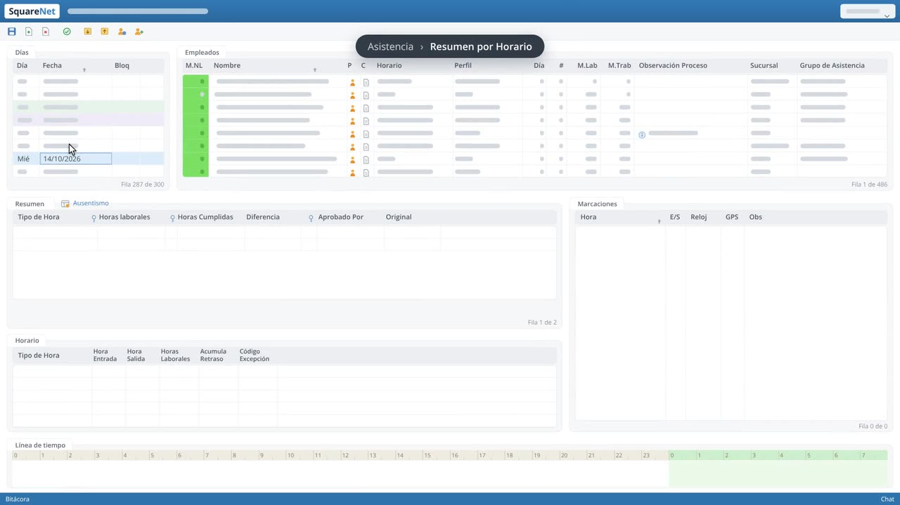

Horarios y turnos ilimitados
Rotativos, por persona o por grupo, indefinidos o por un periodo. Los supervisores asignan el día a día en un cuadro.
Horarios, turnos rotativos y horas extra calculados solos a partir de las marcaciones del reloj biométrico, con orientación industrial para los esquemas más complejos.

Pantallas reales del módulo Control de Asistencia de SquareNet.Clic en el video para verlo en pantalla completa.
Rotativos, por persona o por grupo, indefinidos o por un periodo. Los supervisores asignan el día a día en un cuadro.
Importa de relojes biométricos, tarjetas o proximidad. Nunca más bajar archivos del reloj a mano.
Por ejemplo, ignorar retrasos de menos de 10 minutos: IF( valor_retraso <= 0:10, 0, valor_retraso ).
Los supervisores aprueban o rechazan las horas extra antes de que pasen a la nómina.
Marcaciones impares, días sin marcación, retrasos o personas sin horario, con filtros rápidos.
Calcula las horas trabajadas por tipo y las envía directo a SquareNet Nómina.
IF( valor_retraso <= 0:10, 0, valor_retraso )10 reportes listos para usar, exportables a Excel o PDF desde el sistema.
Complemento ideal para el ERP de tu empresa: SAP, Microsoft Dynamics AX, JD Edwards, Infor u otro sistema administrativo financiero.
Te mostramos Control de Asistencia en una demo y te asesoramos para la cotización.